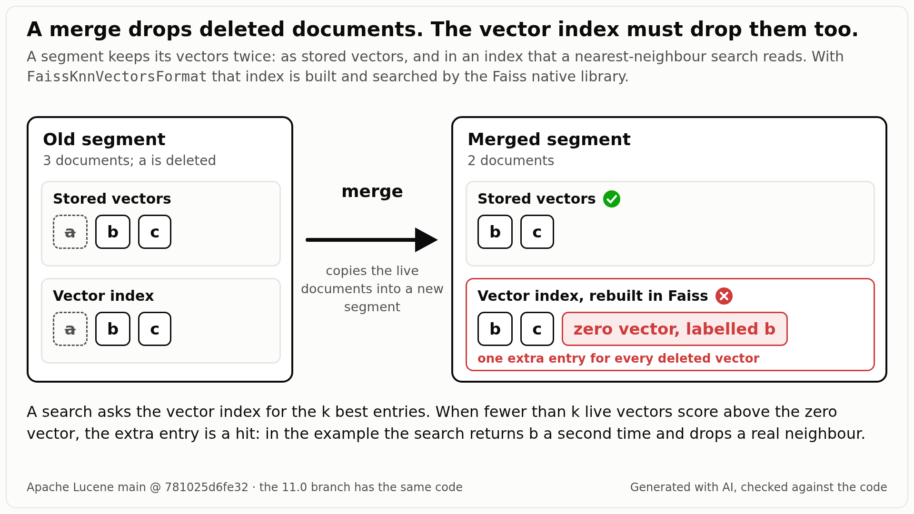

New in 11.0, in no release: the test below fails 1 of 1 on the 11.0 branch (branch_11x daa54f2e0cd3) with assertions on and off, and 10.6.0 does not have the Faiss vector format (added by #14178, commit 922ecaa17f61), so 10.6.0 does not have this defect and 11.0.0 would be the first release with it. The format is in the sandbox module, experimental and opt-in, and needs the Faiss native library.
FaissKnnVectorsFormatkeeps one Faiss index per segment, next to Lucene's stored vectors. Each entry is a vector and the doc id it belongs to.- A delete only marks a document. Its vector leaves the files when a merge rewrites the segment, and the merge builds a new Faiss index from the vectors of the live documents.
- For a merge, Lucene gives the format one view over all source segments. Iterating it skips deleted documents, but its
size()adds up the sources' sizes, deleted documents included.

![The repro's example. Three documents a = (3,0), b = (4,0), c = (5,0) with EUCLIDEAN vectors; a is deleted and the segment is merged. The merged values report size 3, the 2 live vectors are copied, and 3 entries are added to the Faiss index: (4,0) with id 0, (5,0) with id 1 and an unfilled all-zero slot with id 0. For the query (1,0) with k = 2 the expected hits are b = 0.1000 and c = 0.0588; the actual hits are b = 0.5000, the zero entry, and b = 0.1000, and c is missing. A note says when it shows: when fewer than k live vectors score above the zero vector.](../assets/LFV-1502/bug.png)
- Index three documents with
FaissKnnVectorsFormatand EUCLIDEAN vectors: a = (3,0), b = (4,0), c = (5,0). Commit, delete a, thenforceMerge(1). - Search for the 2 nearest to (1,0). You expect the two live documents, each with the score of its own vector: b = 0.1000 and c = 0.0588.
- You get b = 0.5000 and b = 0.1000. Document b is returned twice and c is missing. 0.5 is the score of the vector (0,0), which no document has. No error, with assertions on or off.
- Why: the merge copies the 2 live vectors into the new Faiss index but tells Faiss to add 3, the count that still includes the deleted a. The third slot was never filled: an all-zero vector with id 0, the merged segment's first document, b.
- When it shows: in a one-segment index like this one, when fewer than k live vectors score above an all-zero vector. That is typical for EUCLIDEAN data around the origin and for DOT_PRODUCT or COSINE neighbours with a negative similarity; once k exceeds the number of live vectors (in an index of at least k documents), it also shows with positive similarities and with data far from the origin. With several segments the zero entry must also rank among the best k of the whole index. The stored vectors stay right, and the segment's next ordinary merge with no delete pending is clean.
Only applications that chose FaissKnnVectorsFormat: sandbox, @lucene.experimental, needs the Faiss native library, not the default codec, in no release yet. Any merge after a delete or update, a background merge included, writes the extra entries. Wrong hits show when fewer than k live vectors score above the zero vector, under any similarity; EUCLIDEAN data around the origin is typical.
Mechanism, terms and numbers1,522 words
FaissKnnVectorsFormat is a vector format in Lucene's sandbox module (@lucene.experimental, opt-in, needs the Faiss C library) that is new in 11.0: it was added by #14178 (922ecaa17f61), the 11.0 branch branch_11x daa54f2e0cd3 has it, and no release does (10.6.0 has no Faiss format). It keeps one Faiss index per segment and field, and a merge builds a new one from the raw vectors. The method that builds it, FaissLibraryNativeImpl.createIndex, reads size() of the vector values (FaissLibraryNativeImpl.java:167 on main 781025d6fe32; the file is identical on branch_11x), reserves size zero-filled slots for vectors and ids (:195, :200), copies only the vectors its iterator returns (:203-212), and then passes size, not the number copied, to faiss_fvec_renorm_L2, faiss_Index_train and faiss_Index_add_with_ids (:218, :224, :228). On a merge the values are Lucene's merged view, whose iterator skips deleted documents while its size() sums the source segments' sizes, deleted documents included (KnnVectorsWriter.java:427-431). So each vector of a deleted or updated document leaves one unfilled slot, an all-zero vector with id 0, which is added to the index and names the merged segment's first document. A kNN search then returns that document with the zero vector's score (a second time when it is a hit of its own, as in the test), in place of real neighbours, when fewer than k live vectors score above an all-zero vector. That is typical for EUCLIDEAN data around the origin and for DOT_PRODUCT or COSINE neighbours with a negative similarity; once k exceeds the number of live vectors, in an index that holds at least k documents, it also happens with positive similarities and with data far from the origin. The test and the cases below are one-segment indexes; with several segments the entry must also rank among the best k of the whole index. There is no error with assertions on or off, CheckIndex reports the index clean, the stored vectors are right, and the segment's next ordinary (single-output) merge with no delete pending writes a clean index. Upstream fixed the same over-count in another consumer of merged vector values (#13027) and settled there that consumers recount. The fix is small: use the number of vectors copied, and skip the native calls when nothing was copied.
- The merge hands over the merged view.
FaissKnnVectorsWriter.mergeOneFieldpassesKnnVectorsWriter.MergedVectorValues.mergeFloatVectorValues(fieldInfo, mergeState)towriteFloatField, which callscreateIndex(FaissKnnVectorsWriter.java:100-115,:155-167). - The merged view counts deleted vectors.
MergedFloat32VectorValuessets itssizeto the sum ofsub.values.size()over the source segments (KnnVectorsWriter.java:427-431). Its iterator walks aDocIDMerger, which skips deleted documents (:450-461). createIndextrusts that count.int size = floatVectorValues.size();(FaissLibraryNativeImpl.java:167). It allocatessize * dimensionfloats andsizelongs of zero-filled native memory (:195,:200). The loop copies the id and vector of each document the iterator returns and counts them inidsIndex(:203-212); that counter is never read again. Thenfaiss_fvec_renorm_L2(COSINE only,:218),faiss_Index_train(index types that need training,:224) andfaiss_Index_add_with_ids(:228) are all called withsize.- Each skipped vector leaves a zero entry with id 0. Id 0 is the merged segment's first document, whether or not that document has a vector.
- A flush is right. At flush the values are the buffered vectors (
FaissKnnVectorsWriter.java:137-150), whosesize()is the number of buffered vectors and whose iterator walks the documents that have one (:203-238). Deletes without a merge are filtered at search time and are right too. - The general rule. Any merge whose vector values report more in
size()than their iterator returns leaves such entries. A delete or update before an ordinary merge is the common case; a merge that writes several segments is a second one (see Who is affected).
The merged view reports 3. Two vectors are copied, with the new doc ids 0 (b) and 1 (c). Three entries are added: (4,0) with id 0, (5,0) with id 1, and the unfilled slot (0,0) with id 0. For the query (1,0) the squared distances are 9, 16 and 1. The format turns a squared distance d into the score 1 / (1 + d) (FaissLibraryNativeImpl.java:289-299): 0.1, 0.0588 and 0.5. The top 2 are the zero entry (id 0 = b, 0.5) and b (0.1). The search collects every id Faiss returns (:380-394).
Which cases show it (a 14-line probe on main, each line compared with a brute-force scan over the live documents)
| case | hits | |
|---|---|---|
| P1 the test's case | b=0.5000 b=0.1000 for b=0.1000 c=0.0588 | wrong |
| P2 the same without the delete | a=0.2000 b=0.1000 | right |
| P3 the delete without any merge | b=0.1000 c=0.0588 | right |
P4 P1 with the exact Faiss index IDMap,Flat | b=0.5000 b=0.1000 | wrong |
P5 updateDocument of a, then forceMerge(1) | a=0.5000 b=0.1000 for b=0.1000 c=0.0588 | wrong |
P6 default merge policy, no forceMerge: commit, delete a, close() | b=0.5000 b=0.1000 | wrong |
| P7 P1, then one more document and one more merge | b=0.1000 c=0.0588 | right |
| P8 EUCLIDEAN far from the origin: (13,10), (14,10), (15,10), query (11,10) | b=0.1000 c=0.0588 | right |
| P9, P11 DOT_PRODUCT, COSINE: all similarities positive | b=0.9000 c=0.8000 | right |
| P10, P12 DOT_PRODUCT, COSINE: c has a negative similarity | b=0.9000 b=0.5000 for b=0.9000 c=0.2000 | wrong |
| P13 DOT_PRODUCT, all positive, k = 3 with 2 live vectors and three documents without a vector | b=0.9000 c=0.8000 b=0.5000 | wrong |
| P14 EUCLIDEAN far from the origin, k = 3 with 2 live vectors and three documents without a vector | b=0.1000 c=0.0588 b=0.0045 | wrong |
The 14 lines are the same on main and on the 11.0 branch, with assertions on and off. In every line the stored vectors read back right and CheckIndex with its slow checks reports the index clean. With the fix all 14 lines are right. In P5 the updated document is the merged segment's first document, so it is the one returned with the zero vector's score.
More cases (a second probe of 12 lines on the exact index IDMap,Flat, each line compared with a brute-force scan)
| case | hits | |
|---|---|---|
| S1 P4's segment plus a second segment whose vectors are nearer to the query than the origin: (1.2,0), (0.8,0) | d=0.9615 e=0.9615 | right |
| S2 P4's segment plus a second segment whose vectors are farther away: (6,0), (7,0) | b=0.5000 b=0.1000 for b=0.1000 c=0.0588 | wrong |
| K1, K3 P13 and P14 without the documents without a vector: the index holds 2 documents, k = 3 | b=0.9000 c=0.8000; b=0.1000 c=0.0588 | right |
| K2, K4 the same with one document without a vector: the index holds 3 documents | b=0.9000 c=0.8000 b=0.5000; b=0.1000 c=0.0588 b=0.0045 | wrong |
M1 five documents (3,0) to (7,0), a and b deleted, forceMerge(1), k = 3 | c=0.5000 c=0.5000 c=0.0588 for c=0.0588 d=0.0385 e=0.0270 | wrong |
D1 four documents (3,0) to (6,0), a deleted, forceMerge(1), k = 2 | b=0.5000 b=0.1000 for b=0.1000 c=0.0588 | wrong |
| D2 D1, then the merged segment's first document b deleted, no further merge | c=0.0588 d=0.0385 | right |
F1 five documents, a deleted, forceMerge(1); a filter that accepts b, c, d; k = 2 | b=0.5000 b=0.1000 for b=0.1000 c=0.0588 | wrong |
| F2 the same index; a filter that accepts b and c, no more than k documents | b=0.1000 c=0.0588 | right |
| F3 the same index; a filter that accepts c, d, e and not the first document b | c=0.0588 d=0.0385 | right |
These 12 lines are the same on main and on the 11.0 branch, with assertions on and off. With the fix all 12 are right.
When it shows, by similarity (a third probe of 15 cases, each on the default index IDMap,HNSW16 and on the exact index IDMap,Flat, each line compared with a brute-force scan)
case (a deleted, forceMerge(1), two live vectors b and c) | EUCLIDEAN | DOT_PRODUCT | COSINE |
|---|---|---|---|
| k = 2, the typical data | E1 around the origin: b=0.5000 b=0.1000 for b=0.1000 c=0.0588, wrong | D2 c has a negative similarity: b=0.9000 b=0.5000 for b=0.9000 c=0.2000, wrong | C2 the same hits as D2, wrong |
| k = 2, other data | E2 far from the origin: b=0.1000 c=0.0588, right | D1 every similarity positive: b=0.9000 c=0.8000, right | C1 the same hits as D1, right |
| k = 3, above the 2 live vectors; the index holds 5 documents | E3 far from the origin: b=0.1000 c=0.0588 b=0.0045, wrong | D3 every similarity positive: b=0.9000 c=0.8000 b=0.5000, wrong | C3 the same hits as D3, wrong |
| k = 3; the index holds 2 documents | E4 b=0.1000 c=0.0588, right | D4 b=0.9000 c=0.8000, right | C4 the same hits as D4, right |
| control: nothing deleted, k = 3 | E5 right | D5 right | C5 right |
The default index and the exact index give the same 15 lines, and the lines are the same on main and on the 11.0 branch, with assertions on and off. With the fix all 30 lines are right. The vectors: EUCLIDEAN (3,0), (4,0), (5,0) with the query (1,0), and (13,10), (14,10), (15,10) with the query (11,10); DOT_PRODUCT and COSINE (1,0), (0.8,0.6) and (0.6,0.8) or (-0.6,0.8) with the query (1,0). In the rows with 5 documents, three documents have no vector.
Exposure and likelihood1,063 words
- Who. Applications that set
FaissKnnVectorsFormatas their vector format. It is inlucene/sandbox, tagged@lucene.experimental, and needs the Faiss C library installed. The default codec is not affected. No release has the format; 11.0.0 would be the first, and its change list announces the format under New Features. - Trigger: ordinary writes. A delete or
updateDocumentof a document with a vector, then any merge of its segment:forceMerge(P1),updateDocument(P5), a background merge under the default merge policy with noforceMerge(P6: commit, delete,close(); the default policy rewrote the small segment on its own in this run, which is observed and not a guarantee). Earlier runs showed the same foraddIndexes(CodecReader...)over a reader with deletes. - When wrong hits show. The extra entries are zero vectors with id 0. In a one-segment index, which the test and the cases P1 to P14 are, an unfiltered kNN query returns one when fewer than k live vectors score above an all-zero vector. With several segments the search runs per segment and merges the results, so the entry reaches the final hits only when it is also among the best k of the whole index (S1 right, S2 wrong).
- EUCLIDEAN, the default similarity of
KnnFloatVectorField: when the origin is nearer to the query than real neighbours are (for a neighbour v:2 q.v < |v|^2). Data around the origin is hit (P1, E1). Data far from the origin is not, as long as k is no larger than the number of live vectors (P8, E2). - DOT_PRODUCT and COSINE: the zero entry scores 0.5, so it ranks above every neighbour with a negative similarity (P10, P12, D2, C2 wrong). With positive similarities the hits are right as long as k is no larger than the number of live vectors (P9, P11, D1, C1).
- k larger than the number of live vectors, in an index that holds at least k documents: the extra entry is returned under every similarity, with positive similarities and with data far from the origin too (DOT_PRODUCT: P13, K2, D3; EUCLIDEAN far from the origin: P14, K4, E3; COSINE: C3). The searcher caps the number of hits at the number of documents in the index (
IndexSearcher.java:588,:597), so in an index with fewer documents than k the hits are right (K1, K3, E4, D4, C4). - More than one neighbour can be displaced. There is one zero entry per skipped vector, all with id 0: with two of five documents deleted, all three hits are the first document, two of them with the zero vector's score (M1).
- The entries show only while the merged segment's first document is accepted. With deleted documents in the segment or a filter on the query, the search hands Faiss an id selector built from the accepted documents (
FaissLibraryNativeImpl.java:320-326,:341-378), and id 0 is that first document. Deleting it later, with no merge, hides the entries (D2); so does a filter that leaves it out (F3), while a filter that accepts it does not (F1). A filter that accepts no more documents than the per-segment k (k itself in a one-segment index) is answered by a scan of the stored vectors, which is right (F2;AbstractKnnVectorQuery.java:282-286).
- EUCLIDEAN, the default similarity of
- Measured reach (earlier measurements on the exact index
IDMap,Flat, the 11.0 branch, assertions off: 2,000 vectors of 32 dimensions, 30% deleted,forceMerge(1), 100 queries against a brute-force scan). Result lists that differ from brute force: EUCLIDEAN with Gaussian vectors centred at the origin, 85 of 100 at k = 10 and 100 of 100 at k = 100; in these lists 507 of the 1,000 hits at k = 10 and 9,418 of the 10,000 hits at k = 100 repeat a document that is already in the same list. A second measurement of the same kind, EUCLIDEAN again: Gaussian vectors shifted by 3 in every coordinate, 0 of 100; Gaussian vectors scaled to length 1, 100 of 100 at both k, and 99 and 100 of 100 for queries placed near a data vector (an upper end, not a typical rate: random vectors of length 1 are nearly orthogonal, and under EUCLIDEAN a neighbour of length 1 beats the origin only with a cosine above 0.5). DOT_PRODUCT and COSINE on vectors of length 1, 0 of 100; every control without deletes, 0 of 100. - Silent. No exception with assertions on or off.
CheckIndexwith its slow checks reports the index clean: it checksums the Faiss data file and runs sample searches through the format, but it only requires that a search returns a hit; it does not compare the hits or the Faiss entries with the stored vectors (CheckIndex.java:1066,:3105-3109,:3121-3136;FaissKnnVectorsReader.java:163-168). - How long. Until the segment is merged again. An ordinary (single-output) merge with no delete pending writes a clean index (P7). A merge with deletes writes one zero entry per vector deleted since.
- Not affected. A flushed segment (P2). Deletes without a merge (P3). The stored vectors. A field whose vectors are all deleted: the search returns before the Faiss index is asked.
- Same root, seen in earlier runs. With a sparse field whose first document has no vector, the repeated hit is a document without a vector. The Faiss index of the merged segment is larger by one entry per deleted vector.
- A merge that writes several segments: the same root with no delete. A partitioned merge (the merged #16571, also new in 11.0 and experimental) hands each output segment values that keep
size()of the whole input, while their iterator is cut to the output's range of documents (DocRangeKnnVectorsReader.java:130-133,:63-102). No stock merge policy partitions (MergePolicy.java:401-413), so it takes an application's own merge policy. Run on main and on the 11.0 branch, assertions on and off: after a two-output merge of 10 documents with no delete, the two output segments return their first document three and five times among five hits, where the default vector format returns five different documents in each; with the fix both formats return the same hits. - Likelihood: plausible for an application that uses the format (an estimate, not usage data): the write side is certain after a delete or update and a merge; whether a search shows it depends on the data and on k, as described above.
One JUnit test with one method in lucene/sandbox; the scenario uses public API only. It needs the Faiss C library 1.11.0 on the library path; without it the class is skipped, which is not a pass. It fails on main and the 11.0 branch, assertions on and off, and passes with the fix. It is also the suggested regression test.
/*
* Licensed to the Apache Software Foundation (ASF) under one or more
* contributor license agreements. See the NOTICE file distributed with
* this work for additional information regarding copyright ownership.
* The ASF licenses this file to You under the Apache License, Version 2.0
* (the "License"); you may not use this file except in compliance with
* the License. You may obtain a copy of the License at
*
* http://www.apache.org/licenses/LICENSE-2.0
*
* Unless required by applicable law or agreed to in writing, software
* distributed under the License is distributed on an "AS IS" BASIS,
* WITHOUT WARRANTIES OR CONDITIONS OF ANY KIND, either express or implied.
* See the License for the specific language governing permissions and
* limitations under the License.
*/
package org.apache.lucene.sandbox.codecs.faiss;
import java.io.IOException;
import java.util.Locale;
import org.apache.lucene.document.Document;
import org.apache.lucene.document.Field;
import org.apache.lucene.document.KnnFloatVectorField;
import org.apache.lucene.document.StringField;
import org.apache.lucene.index.DirectoryReader;
import org.apache.lucene.index.IndexWriter;
import org.apache.lucene.index.IndexWriterConfig;
import org.apache.lucene.index.StoredFields;
import org.apache.lucene.index.Term;
import org.apache.lucene.index.VectorSimilarityFunction;
import org.apache.lucene.search.IndexSearcher;
import org.apache.lucene.search.KnnFloatVectorQuery;
import org.apache.lucene.search.ScoreDoc;
import org.apache.lucene.search.TopDocs;
import org.apache.lucene.store.ByteBuffersDirectory;
import org.apache.lucene.store.Directory;
import org.apache.lucene.tests.util.LuceneTestCase;
import org.apache.lucene.tests.util.TestUtil;
import org.junit.BeforeClass;
public class TestFaissMergeAfterDelete extends LuceneTestCase {
@BeforeClass
public static void maybeSuppress() {
if (Boolean.getBoolean("tests.faiss.run")) {
return;
}
boolean dependenciesPresent;
try {
FaissLibrary _ = FaissLibrary.INSTANCE;
dependenciesPresent = true;
} catch (LinkageError _) {
dependenciesPresent = false;
}
assumeTrue("Dependencies present", dependenciesPresent);
}
public void testMergeAfterDelete() throws IOException {
try (Directory dir = new ByteBuffersDirectory()) {
IndexWriterConfig config =
new IndexWriterConfig()
.setCodec(TestUtil.alwaysKnnVectorsFormat(new FaissKnnVectorsFormat()));
try (IndexWriter writer = new IndexWriter(dir, config)) {
writer.addDocument(doc("a", 3));
writer.addDocument(doc("b", 4));
writer.addDocument(doc("c", 5));
writer.commit();
writer.deleteDocuments(new Term("id", "a"));
writer.forceMerge(1);
}
try (DirectoryReader reader = DirectoryReader.open(dir)) {
IndexSearcher searcher = new IndexSearcher(reader);
TopDocs topDocs = searcher.search(new KnnFloatVectorQuery("v", new float[] {1, 0}, 2), 2);
StoredFields storedFields = searcher.storedFields();
StringBuilder hits = new StringBuilder();
for (ScoreDoc hit : topDocs.scoreDocs) {
hits.append(
String.format(
Locale.ROOT, "%s=%.4f ", storedFields.document(hit.doc).get("id"), hit.score));
}
// expected documents b and c; actual "b=0.5000 b=0.1000 ": b twice, once as a zero vector
assertEquals("b=0.1000 c=0.0588 ", hits.toString());
}
}
}
private static Document doc(String id, float x) {
Document doc = new Document();
doc.add(new StringField("id", id, Field.Store.YES));
doc.add(new KnnFloatVectorField("v", new float[] {x, 0}, VectorSimilarityFunction.EUCLIDEAN));
return doc;
}
}
# the Faiss C library 1.11.0 (libfaiss_c), from the conda channels the format's package javadoc names
micromamba create -y -p $FAISS_ENV -c pytorch -c conda-forge faiss-cpu=1.11.0
cp $REPRO/TestFaissMergeAfterDelete.java $LUCENE/lucene/sandbox/src/test/org/apache/lucene/sandbox/codecs/faiss/
cd $LUCENE && LD_LIBRARY_PATH=$FAISS_ENV/lib ./gradlew -p lucene/sandbox test \
--tests "org.apache.lucene.sandbox.codecs.faiss.TestFaissMergeAfterDelete" \
-Dtests.faiss.run=true -Ptests.seed=DEADBEEF -Ptests.asserts=true
# -Dtests.faiss.run=true: a missing library is an error, not a skipped class (a skip is not a pass). Also with -Ptests.asserts=false
- Expected
b=0.1000 c=0.0588: the two live documents, each with the score of its own vector.- Observed
b=0.5000 b=0.1000: b twice, first with the score of an all-zero vector, and c missing (ComparisonFailureat line 84).
More files, environment, full output405 words
TestFaissMergeAfterDelete (package org.apache.lucene.sandbox.codecs.faiss; the scenario uses public API and the test framework; the library guard, the same as in upstream's TestFaissKnnVectorsFormat, reads the package-private FaissLibrary, which is why the test sits in the format's package): three documents, one delete, forceMerge(1), one query, one assertion on the hits written as id=score. One thread, a default-constructed IndexWriterConfig, a ByteBuffersDirectory, no random input, about one second. The outcome does not depend on the seed.
The native library. The test needs the Faiss C library 1.11.0 (libfaiss_c), the version the format names (FaissNativeWrapper.java:52). The format's package-info.java describes the install from the conda channels pytorch and conda-forge; the command below does that into a directory $FAISS_ENV and puts its lib directory on LD_LIBRARY_PATH. -Dtests.faiss.run=true is the switch upstream's CI job uses: with it a missing library is an error. Without the switch and without the library, the class is skipped by the guard. A skipped class is not a pass: a run counts only when the test ran.
Upstream, the method would more naturally sit in TestFaissKnnVectorsFormat, which already has the guard.
| lucene | main 781025d6fe32 (12.0.0-SNAPSHOT); also branch_11x daa54f2e0cd3 (11.0.0-SNAPSHOT) |
|---|---|
| jdk | OpenJDK 25.0.3 (build 25.0.3+9-LTS) |
| os | Linux aarch64 (the only platform run), with the Faiss C library 1.11.0 (libfaiss_c) on the library path |
# the Faiss C library 1.11.0 (libfaiss_c), from the conda channels the format's package javadoc names
micromamba create -y -p $FAISS_ENV -c pytorch -c conda-forge faiss-cpu=1.11.0
cp $REPRO/TestFaissMergeAfterDelete.java $LUCENE/lucene/sandbox/src/test/org/apache/lucene/sandbox/codecs/faiss/
cd $LUCENE && LD_LIBRARY_PATH=$FAISS_ENV/lib ./gradlew -p lucene/sandbox test \
--tests "org.apache.lucene.sandbox.codecs.faiss.TestFaissMergeAfterDelete" \
-Dtests.faiss.run=true -Ptests.seed=DEADBEEF -Ptests.asserts=true
# -Dtests.faiss.run=true: a missing library is an error, not a skipped class (a skip is not a pass). Also with -Ptests.asserts=false
# gradle, main 781025d6fe32, -Dtests.faiss.run=true -Ptests.seed=DEADBEEF -Ptests.asserts=true (excerpt)
TestFaissMergeAfterDelete > testMergeAfterDelete FAILED
org.junit.ComparisonFailure: expected:<b=0.[1000 c=0.0588] > but was:<b=0.[5000 b=0.1000] >
at __randomizedtesting.SeedInfo.seed([DEADBEEF:9342AAB2D509EAEF]:0)
at app/junit@4.13.2/org.junit.Assert.assertEquals(Assert.java:117)
at app/junit@4.13.2/org.junit.Assert.assertEquals(Assert.java:146)
at app//org.apache.lucene.sandbox.codecs.faiss.TestFaissMergeAfterDelete.testMergeAfterDelete(TestFaissMergeAfterDelete.java:84)
:lucene:sandbox:test (FAILURE): 1 test, 1 failure
# the same failure: gradle with -Ptests.asserts=false; a standalone runner on main and on branch_11x daa54f2e0cd3, assertions on and off (1 test run each)
# 10.6.0 release jars: the test does not compile (FaissLibrary and FaissKnnVectorsFormat do not exist)
# with the fix: 1 test, 0 failures (gradle on main; the standalone runner on main and branch_11x; assertions on and off)
# without the library and without -Dtests.faiss.run=true: the class is skipped (no test runs), which is not a pass- The kNN contract returns documents scored by their own vectors. Here one comes back twice, once with a score no vector has; the exact Faiss index does the same.
- Upstream settled this on #13027: the size of merged vector values can include deleted documents, and the consumer recounts.
createIndexcounts the copied vectors (idsIndex) and never uses that count.
The full argument390 words
- The search contract. "Return the k nearest neighbor documents as determined by comparison of their vector values for this field, to the given vector, by the field's similarity function. The score of each document is derived from the vector similarity in a way that ensures scores are positive and that a larger score corresponds to a higher ranking." (
KnnVectorsReader.java:97-100).KnnFloatVectorQuery: "Find the k nearest documents to the target vector according to the vectors in the given field" (KnnFloatVectorQuery.java:55-56). A hit is a document, scored by its own vector. Here one document is returned twice, once with the score of a vector no document has. - Upstream's own rule for merged vector values. #13027 (merged 2024-01, 9.9.2) fixed the same assumption in the scalar quantizer. In benwtrent's description of that change: "using
FloatVectorValues#sizemay actually be larger than the actual size of live documents". jpountz pointed there toFieldsConsumer#write, "which clearly states that index statistics must not be pulled from the mergedTermsinstance but recomputed", and the fix went into the consumer. #16764 (merged 2026-10, 10.6.0) fixed a related defect, deleted documents summed into a merge centroid of the Lucene104 scalar-quantized writer, again in the consumer; kaivalnp, the author of the Faiss format, began a review comment on it with "Using the count of live vectors is the correct thing to do here, ..." (the comment goes on to a question about another count in that change). - The method has the right count at hand.
idsIndexcounts the vectors copied and is not used after the loop (FaissLibraryNativeImpl.java:201-212). - Deletes and merges are not a stated limit. The format states its limits: it refuses BYTE and FLOAT16 vectors (
FaissKnnVectorsWriter.java:103-107) and MAXIMUM_INNER_PRODUCT (FaissLibraryNativeImpl.java:150-156). Its javadoc andpackage-info.javasay nothing about deletes or merges. - The result depends on index history. The same live documents give the right hits before the merge (P3) and after the next clean merge (P7).
- Why upstream's tests pass. The CI job that runs the Faiss tests with the library runs
TestFaissKnnVectorsFormat. Its inherited test that searches after updates,testRandomWithUpdatesAndGraph, asserts only the number of hits and their order (BaseKnnVectorsFormatTestCase.java:1829-1832), andtestDeleteAllVectorDocsdeletes every vector (:893-929). The suite passes with the defect (59 tests, 10 skipped by its own annotations and assumptions).
The devil's-advocate check199 words
The strongest case for "accepted": it is experimental sandbox code, and kNN search is approximate. The class is tagged @lucene.experimental, its javadoc says "TODO: There is no guarantee of backwards compatibility!" (FaissKnnVectorsFormat.java:59), and the search contract says "The search is allowed to be approximate, meaning the results are not guaranteed to be the true k closest neighbors" (KnnVectorsReader.java:102-104). Also, KnnVectorValues.size() is documented as "the number of vectors returned by this iterator" (KnnVectorValues.java:36-41), so the format follows the javadoc and the merged view does not.
Why it fails: "approximate" covers which neighbours come back, not one document twice or a score that no document's vector has, and the exact index IDMap,Flat fails the same way (P4). The experimental tag is about API stability ("This API is experimental and might change in incompatible ways in the next release"). The commit message of #14178 says the format "might have exciting bugs" and adds "PRs welcome!", and an earlier defect of this format (#14847) is listed under Bug Fixes of 11.0.0. The size() point is real; upstream answered it on #13027: the merged view may over-count, and consumers recount. So the fix belongs in this consumer.
Recommended Use the number of vectors copied, and skip the calls when nothing was copied (validated)
In createIndex, pass the number of vectors copied (idsIndex) to the three Faiss calls, not size(), and skip them when nothing was copied. Validated: the test passes on main and the 11.0 branch; upstream's Faiss tests, the sandbox module and check pass. Without the skip, the merge of a trained index type (IDMap,IVF1,Flat) fails when every vector is deleted.
// after the copy loop: idsIndex is the number of vectors copied
int count = idsIndex;
if (count > 0) {
if (function == COSINE) {
wrapper.faiss_fvec_renorm_L2(dimension, count, docs); // was: size
}
if (wrapper.faiss_Index_is_trained(indexPointer) == 0) {
handleException(wrapper.faiss_Index_train(indexPointer, count, docs)); // was: size
}
handleException(wrapper.faiss_Index_add_with_ids(indexPointer, count, docs, ids)); // was: size
}All options and trade-offs3 options · 864 words
One fix was built and validated, in two variants: with and without a guard for a merge that copies no vector. Two alternatives were not built.
Use the number of vectors copied, and skip the calls when nothing was copied (validated) (recommended)
FaissLibraryNativeImpl.createIndex already counts the vectors it copies in idsIndex. Pass that count to faiss_fvec_renorm_L2, faiss_Index_train and faiss_Index_add_with_ids in place of size, and skip the three calls when the count is 0. One method, 20 lines added and 13 removed, most of them re-indented. The excerpt below folds the isTrained lookup into its condition and leaves out the existing comments.
// after the copy loop: idsIndex is the number of vectors copied
int count = idsIndex;
if (count > 0) {
if (function == COSINE) {
wrapper.faiss_fvec_renorm_L2(dimension, count, docs); // was: size
}
if (wrapper.faiss_Index_is_trained(indexPointer) == 0) {
handleException(wrapper.faiss_Index_train(indexPointer, count, docs)); // was: size
}
handleException(wrapper.faiss_Index_add_with_ids(indexPointer, count, docs, ids)); // was: size
}Trade-offs
- Why the guard. Without it (the plain three-argument change), a Faiss index type that needs training fails the merge of a field whose vectors are all deleted:
faiss_Index_trainis called with a count of 0 and throws, where the stock code merges (it trains on the zero padding). An exception in a merge is a tragic event for theIndexWriter. The default index type needs no training and is not affected. Executed withIDMap,IVF1,Flat. - A trained index type with too few live vectors. One case was run: with
IDMap,IVF2,Flatand one live vector left by the merge,faiss_Index_trainthrows and the merge fails. The stock code survives that merge only because it trains on the zero padding, and then returns wrong hits (c=0.5000 c=0.5000). The stock code already fails the same way at flush for a segment with one vector and that index type, so for this index type the fix makes a failure that exists at flush visible at merges too. WithIDMap,IVF1,FlatFaiss only warns about too few training points and trains. Other trained index types were not run. What such an index type should do with too few vectors is the maintainers' call. - Memory. The native buffers are still sized by
size(), so a merge with many deletes reserves more temporary native memory than it uses, as today. - Not run. PQ index types; a direct call of the codec reader's
searchon a segment whose trained index was left empty (a kNN query returns before the index is asked, because the field has no vectors); platforms other than Linux aarch64.
What the checks validated
- The test passes on main and on the 11.0 branch, assertions on and off (the fix compiled ahead of the built jars).
- Gradle in a scratch worktree of
781025d6fe32, with the library and-Dtests.faiss.run=true: the test fails on the stock tree and passes with the fix, assertions on and off. - The closest suite,
--tests "org.apache.lucene.sandbox.codecs.faiss.*"(upstream'sTestFaissKnnVectorsFormatplus the new test): 60 tests, 10 skipped by upstream's own annotations and assumptions, 0 failures, assertions on and off. The stock tree: 59 tests, 10 skipped, 0 failures. - The whole sandbox module,
:lucene:sandbox:test: 426 tests, 23 skipped, 0 failures. ./gradlew :lucene:sandbox:check -x test(checkGoogleJavaFormat,ecjLint,forbiddenApis,checkLicenses) passes with the fix and the test.- The 14-line probe: all lines right, assertions on and off.
- A trained index type (
IDMap,IVF1,Flat): right with one of three vectors deleted and with every vector deleted. - The 12 further cases (several segments, k above the number of live vectors, two deletes, a later delete of the first document, filters): all right, on main with assertions on and off and on the 11.0 branch. The partitioned-merge probe: the same hits as the default vector format, on main (assertions on and off) and on the 11.0 branch.
- The 15 cases by similarity, on the default and on the exact index: all 30 lines right, on main with assertions on and off and on the 11.0 branch.
- The plain three-argument change was validated the same way (the test, the suite, the module,
check, the probe). It differs only in the every-vector-deleted case of the trained index type, where its merge throws.
createIndex takes the live count as a parameter, as #13027 did for the scalar quantizer, and the writer counts first. The native buffers are then sized exactly. The merged view allows one forward pass with one iterator and cannot be copied (KnnVectorsWriter.java:475-485, :507-510), so counting first means building the merged view a second time.
Trade-offs
A second merged view and a second pass over the vectors of the merge, or buffers that grow while copying. More code than the recommended option for the same hits.
KnnVectorsWriter.MergedVectorValues would report the number of vectors its iterator returns, as the KnnVectorValues.size() javadoc says. Every consumer would be protected.
Trade-offs
Upstream chose the consumer-side fix on #13027, and the live count is not known without a pass over the documents. A change in core for a sandbox format.
Semi-formal: a model of what each step of the vector write path must leave in the index was run against this format with the real Faiss library. All 28 configurations showed repeated, missing or mis-scored kNN hits while the stored vectors were right. The failures were reduced to one test.
The method in full240 words
Method: semi-formal (model-based checking of the real jars against exact expectations; no formal proof tool was involved).
- Every-step model. A model of what the vector write path must leave in the index after each step was run against
FaissKnnVectorsFormatwith the real Faiss C library, on main with assertions on: 28 of 28 configurations (7 kinds of merge, with and without an index sort and a sparse field) showed duplicated, missing or mis-scored kNN hits, and no wrong stored vector. With the fix, 27 are clean and the last one stops on a different, separately recorded defect in another class. - The condition. A second pass asked why only some searches show it: the extra entries are zero vectors, so hits change only when the origin competes with the real neighbours. It was then measured (Who is affected).
- Reduction and a predictive model. The failures were reduced to one public-API test. A small model of the merged index (the L live entries plus S - L all-zero entries with id 0, for S vectors in the source segments of which L are live) predicted the real library's hits exactly in 6 of 6 directed configurations on the 11.0 branch and on main, and predicted the clean index with the fix.
- An earlier lead. A reading of the consumers of merged vector values on 2026-11-03 had noted this method as a suspect without running it, because no native library was at hand.
No report of this defect found (searched 2026-11-14: GitHub issues, pull requests and commits incl. the JIRA archive, the Lucene and Solr lists, downstream projects; re-checked for this page). A merged fix of the same over-count in another vector writer (#13027) is a precedent, not a report of this.
Searches7 searches
Related, not reports of this defect. Merged fixes of the same pattern, deleted vectors counted at a merge, in other vector writers: #13027 (2024-01, 9.9.2: the scalar quantizer's sampling trusted size() of the merged values, the same assumption as here), #16764 with issue #16762 (2026-10, 10.6.0: deleted documents summed into a merge centroid of Lucene104ScalarQuantizedVectorsWriter), LUCENE-9695 (2021: the first HNSW writer included deleted vectors in its graph). The format's own threads: #14178, the introducing pull request (description, comments and inline comments searched): deleted documents come up only as a search-time filter and for a future native index merge; #14875 and #15287, open issues by the format's author (a general question on how to catch problems of the format, and a list of improvements): this item is on neither. Other merged changes of the format's files (#14847, #14934, #16065, #16647, #16723, #16769) are not about the number of vectors passed to Faiss. Gaps: 6 general web and Stack Overflow queries could not run and are pending; keyword search only; a private report to a maintainer would not be visible.
| Where | When | How | Found |
|---|---|---|---|
| apache/lucene issues and pull requests, open and closed (incl. the migrated JIRA archive) | 2026-11-14 | 26 searches; one lists every item that contains the word faiss (43 items, all classified; the format's own threads read in full, with their inline comments) | no report of this defect |
| Open pull requests, commits and contributors' branches | 2026-11-14 | the changed files of all 423 open pull requests; 5 commit queries; the branches of the format's three contributors | no pull request or commit about this defect; not fixed on main or on the 11.0 branch |
| Downstream and code search (Elasticsearch, OpenSearch and its k-NN and jvector plug-ins, Solr, luceneutil, the Faiss project, all of GitHub by class name) | 2026-11-14 | 22 searches and 4 code searches | users of the format, no report |
| Mailing lists and JIRA (dev@, java-user@, general@, issues@ and commits@lucene; dev@ and users@solr; LUCENE and SOLR) | 2026-11-14 | 35 list queries (the four dev@ threads of 2025-2026 that name Faiss read in full) and 4 JIRA queries | no report; LUCENE-9695 is the same pattern in another writer |
| A scripted prior-report search and Hacker News | 2026-11-14 | two scripted runs with other terms (90 queries); 2 Hacker News queries | nothing that describes this defect |
| Re-check for this page (read-only) | 2026-11-14 | git ls-remote for main, branch_11x and 11.x release tags; the newest commits on the format's files; 6 GitHub searches | main and branch_11x unchanged, no 11.x release tag, the newest commit to the file is still #16065 (2026-05-26); nothing new |
| General web and Stack Overflow | 2026-11-14 | 6 queries prepared, none run | not run (pending) |
Not a regression: the count has been wrong since the format's first commit (#14178, 922ecaa17f61, 2025-06-20). In no release; the 11.0 branch and main have it; 10.6.0 has no Faiss format. Not fixed upstream.
Versions tested7 rows
Introduced with the format itself: 922ecaa17f61, "Add a Faiss KNNVectorsFormat (Codec component) for KNN searches (#14178)", Kaival Parikh (kaivalnp), merged by mikemccand on 2025-06-20, milestone 11.0.0, label module:sandbox. createIndex has passed size to Faiss since that commit, so this is a defect of a feature that is new in 11.0, not a regression of a later change.
Later merged changes kept the count. #14847 (2025-07) copies through MemorySegment and introduced the counter idsIndex, which holds the number of vectors copied and is not used after the loop. #14934 (2025-08) moved the method to FaissLibraryNativeImpl.java. #16065 (2026-05) added COSINE support and with it the third call with size.
The 11.0 branch. The commit is an ancestor of branch_11x daa54f2e0cd3 and of main, and not of the 10.6.0 tag or branch_10x. The format's source files and core's KnnVectorsWriter.java are identical on branch_11x and main. The branch's change list names #14178 under Lucene 11.0.0, New Features. No 11.x release tag exists yet.
No release. lucene-sandbox-10.6.0.jar has 0 entries with "faiss" in the name; the sandbox jars of branch_11x and main have 16 each. A 10.x backport (#14843) was merged and reverted on the same day in 2025-07; no release has it.
The precondition is older and is not the defect. The merged vector values have summed the sources' size() since 2021; upstream's convention since #13027 is that a consumer recounts.
Executed for this page: main and branch_11x (assertions on and off), the 10.6.0 jars, both with the fix. The runs at the introducing commit, its parent, 9.12.3 and 10.5.2 are earlier runs; the two 2025 builds were jars compiled from the commit's tree, not the commit's own gradle build.
| Version or commit | Verdict | Result |
|---|---|---|
branch_11x daa54f2e0cd3 (11.0.0-SNAPSHOT) | the 11.0 release branch | the test fails 1 of 1, assertions on and off |
main 781025d6fe32 (12.0.0-SNAPSHOT) | affected | the test fails (gradle and a standalone runner, assertions on and off) |
main at 922ecaa17f6 (2025-06-20) | the introducing commit | fails with the same message (an earlier run on jars compiled from the commit's tree) |
3a57b73b6dc | its parent: no Faiss format | the test does not compile (an earlier run) |
| 10.6.0 | no Faiss format | the test does not compile; 0 entries with faiss in the sandbox jar |
| 9.12.3, 10.5.2 | no Faiss format | the same compile errors (earlier runs); 10.0.0 to 10.5.2: 0 entries in each sandbox jar |
| main + fix, branch_11x + fix | not affected | the test passes (assertions on and off); on main upstream's Faiss tests, the sandbox module and check pass |
Reproduced independently with a separately written test on the 11.0 branch and main. Three executed second opinions (refutation, root cause, intended behaviour) all found it real. This page re-ran the test on both branches and validated the fix with gradle. Later fact checks and two checks of the pictures confirmed it and corrected how its conditions were worded.
Checks and verdicts1,189 words
Every check below except the second fact check ran Java with the real Faiss C library 1.11.0; a run without the library (a skipped class) was never counted. The second fact check read the code and the recorded runs. None produced a not-real argument. Limits: everything ran on Linux aarch64 with JDK 25.0.3 and one build of the library; index types that need training were first run for this page (Suggested fix); PQ index types were not run; the general web and Stack Overflow searches are pending.
| Check | Verdict | What it found |
|---|---|---|
| original finding | candidate, Medium | The one-method test fails on the 11.0 branch and on main (assertions on and off), does not compile against 10.6.0, and passes with the three-argument change; the control without the delete passes. A predictive model of the merged index agrees with the real library in 6 of 6 configurations. Directed variants (a background merge, DOT_PRODUCT, COSINE, addIndexes, several segments, index size, a sparse field, the next merge) differ on the stock code and agree with the fix. Upstream's TestFaissKnnVectorsFormat passes 49 tests with the defect and with the fix. |
| refutation attempt (second opinion, executed) | real, high confidence | Its own test (four other vectors, query (0,0), a deleted document that is not the first, the stock default codec with only the vector format replaced) fails on main with assertions on and off; its control without the delete passes; with the fix its test and upstream's suite pass. It rated the intended-behaviour argument weak. |
| root-cause check (second opinion, executed) | real, high confidence | Its own exact-index test fails on main (assertions on and off). Its instrumented copy of createIndex logged size=3 and copied=2, with the unfilled slot id 0 and vector 0.0, for the delete-and-merge case, and size=3, copied=3 otherwise. Its own equivalent of the fix passes. It found the introducing change and the precedent #13027 in the history by itself. |
| intended-behaviour check (second opinion, executed) | real, high confidence | It rated the case for intended (sandbox, experimental, approximate search) weak and the inputs in contract. Its own three-method test on the exact index (the delete case, a no-delete control, a default-codec delete control): 1 of 3 fails on the 11.0 branch and on main, 3 of 3 pass with the fix. |
| independent reproduction | real | Its own test, written from the claim before reading the original code (vectors (3,0), (0,3), (0,4); the middle document deleted; each hit's score must be its own vector's and a document may be a hit only once), fails on the 11.0 branch and on main with assertions on and off. Its entry-count probe on the exact index shows one extra entry per skipped vector, scored as the origin and labelled doc 0; none without a delete, none after a second merge with no delete pending. Without forceMerge it saw the wrong hits in 4 of 4 observations. |
| intended-behaviour argument | real; no argument holds | Four arguments for intended, documented or accepted were built (experimental sandbox code; deletes or merges as a listed limitation; the consumer may trust size(); kNN search is approximate): none holds. Its probe with the stock default codec: deletes without a merge are right; a delete and close() under the default merge policy gives the wrong hits; the stored vectors read back right. |
| final assessment | confirmed, high confidence, Medium (its bottom) | Re-ran the test and the independent test on the 11.0 branch and on main with assertions on and off (all fail), both with the fix (pass), the control without the delete (passes) and the 10.6.0 jars (compile error), and ran its own reach probe (Who is affected). |
| credibility audit | keep | Re-ran the test on both builds with assertions on and off (fails; passes with the fix). Its own probe found that with k above the number of live vectors, in an index that holds at least k documents, the extra entry is returned under every similarity. |
| minimality check | claim | The one-method test with its comment cut to one line: fails on main and on the 11.0 branch (assertions on and off), passes with the fix, does not compile on 10.6.0. |
| this page | as above; the fix got a guard | The test through gradle and a standalone runner on main and on the 11.0 branch, stock and fixed; upstream's Faiss tests, the sandbox module and check with the fix; a 14-line probe of which data and similarity functions show wrong hits; a probe with a trained index type, which showed that the three-argument change needs a guard for a merge that copies no vector. After the fact checks below: a second probe of 12 cases (several segments, k, two deletes, a later delete, filters) and the partitioned-merge probe, on main and on the 11.0 branch, stock and with the fix. After the second check of the pictures: a third probe of 15 cases on two index types (the three similarities, k at and above the number of live vectors), on main and on the 11.0 branch, stock and with the fix. |
| fact check of this page | real as described; five statements corrected | Ran the test, both probes, the fix and the page's gradle command again with its own copy of the library, read every cited line, commit and quote, and wrote two probes of its own from the page's claims. The bug reproduces as documented. It corrected five statements: the condition for a wrong final hit was worded per segment (a second segment can keep the zero entry out of the final hits); two table rows left out their three documents without a vector; one change listed as a change of the format is not one; what CheckIndex does; one line of the output excerpt. |
| second fact check of this page (second opinion) | real as described; one addition, wording corrected | Found the bug real, new in 11.0 and the recommended fix the right default. It added the partitioned merge, which leaves the entries with no delete, and corrected wording: what CheckIndex does, "public API only", one line reference, one shortened quotation, when the entries are hidden, that several neighbours can be displaced, the sentence on trained index types and the cost of counting first. Each point was re-run or re-read for this page. |
| two checks of the pictures | real as drawn; one sentence corrected | Each compared every drawn value, quoted line and label with the code and with runs of its own with the library; all of them held. The second found one sentence, in two pictures, too narrow about when wrong hits show: it limited DOT_PRODUCT and COSINE to neighbours with a negative similarity and left out data far from the origin. Its runs showed the extra hit with positive similarities and with data far from the origin once k exceeds the number of live vectors. The pictures and this page now state the condition (fewer than k live vectors score above the zero vector) and name the two usual cases as typical, and a third probe was run for it (the table "When it shows, by similarity"). |
The diagram as a still image, generated with AI and checked against the code. It is under 10 MB, the limit for a GitHub attachment.
- PNG 392 KB
Finding record, Lucene and upstream sources, repro files and diagram notes2,902 words
- Registry title
- FaissKnnVectorsFormat (sandbox, new in 11.0): a merge adds size() entries of the merged vector values to the Faiss index but copies only the vectors of live documents, so each vector of a deleted or updated document becomes an all-zero entry with doc id 0, and kNN can return the merged segment's first document, with the zero vector's score, in place of real neighbours when fewer than k live vectors score above the zero vector (typical for EUCLIDEAN data around the origin and for DOT_PRODUCT or COSINE neighbours with a negative similarity)
- Area
- sandbox / codecs: FaissKnnVectorsFormat (the Faiss-based vector format: @lucene.experimental, needs the Faiss C library; added by #14178, 11.0.0 would be its first release): the merge path that builds the Faiss index (FaissLibraryNativeImpl.createIndex)
- Priority
- Medium, rank 278: After a document with a vector is deleted or updated and its segment is merged (a background merge too), a kNN search over the sandbox Faiss vector format silently returns the merged segment's first document with the score of an all-zero vector (a second time when it is a hit of its own), in place of real neighbours, when fewer than k live vectors score above that zero vector, which is typical for EUCLIDEAN data around the origin; assertions on or off make no difference and CheckIndex reports the index clean. It is Medium because the trigger is the ordinary delete-then-merge lifecycle of any application that uses the format. The format is experimental, opt-in, needs the Faiss native library and is in no release yet (11.0.0 would be the first), data far from the origin and DOT_PRODUCT or COSINE searches whose neighbours have a positive similarity mostly do not show it, and a later ordinary (single-output) merge of the segment with no pending delete clears it.
- Impact class
- silent wrong results
- Impact note
- Hits only applications that chose FaissKnnVectorsFormat (lucene/sandbox, @lucene.experimental, with the Faiss C library installed; not the default codec; new in 11.0 and in no release yet): for them every merge of a segment that holds a deleted or updated vector document (forceMerge, a background merge under the default merge policy, addIndexes over a reader with deletes) writes one all-zero entry with doc id 0 per skipped vector into the merged segment's Faiss index, with -ea and -da and with no error, and CheckIndex reports the index clean; a kNN search then returns the merged segment's first document with the zero vector's score (a second time when it is a hit of its own), in place of real neighbours, when fewer than k live vectors score above the zero vector (typical for EUCLIDEAN, the default similarity of KnnFloatVectorField, with data around the origin, and for DOT_PRODUCT or COSINE neighbours with a negative similarity; once k exceeds the number of live vectors, in an index of at least k documents, also with positive similarities and with data far from the origin), until that segment is merged again; the stored vectors are never wrong; no scale is needed (three documents).
- Summary
- You index vectors with FaissKnnVectorsFormat (a sandbox, experimental vector format that is new in 11.0 and needs the Faiss native library), delete or update a document, and a merge runs. You expect a kNN search to return each live document at most once, with the score of its own vector. Instead the merged segment's Faiss index holds one extra all-zero vector for every vector of a deleted or updated document, labelled as the segment's first document, so a search for which fewer than k live vectors score above that zero vector gets the first document back with the zero vector's score (a second time when it is a hit of its own), in place of real neighbours, with no error, until the segment is merged again. That is typical for EUCLIDEAN data around the origin and for DOT_PRODUCT or COSINE neighbours with a negative similarity; once k exceeds the number of live vectors it also happens with positive similarities and with data far from the origin.
- Introduced
- 922ecaa17f61da3e37d0276fa9c9a5841f3d14ee (apache/lucene#14178, commit subject 'Add a Faiss KNNVectorsFormat (Codec component) for KNN searches', pull request title 'Add a Faiss codec for KNN searches'; author Kaival Parikh (kaivalnp), merged by mikemccand; milestone 11.0.0, label module:sandbox; parent 3a57b73b6dca). It is the first commit of the format (0 files under the format's directory at the parent, 5 at the commit), so this is a defect of a feature that is new in 11.0, not a regression of a later change and not a deliberate later choice. [exec: on jars compiled from the two commits' trees (javac 25 --release 24, not the commits' own Gradle build) the parent has no Faiss format (the test does not compile) and 922ecaa17f6 fails 1 of 1 with -ea and -da with the message that main gives today; with a patched copy of LibFaissC.java that passes the number of vectors copied to the two calls the test passes 1 of 1 (-ea, -da), and the control without the delete passes] [read: git log -S, -G and -L and git blame in both clones; at the commit LibFaissC.java reads size() (:187) and passes size to INDEX_TRAIN (:239) and INDEX_ADD_WITH_IDS (:243), and mergeOneField hands it the merged values]. Inside the pull request (25 commits) the calls with size are in its first commit a4056db6850 (2025-01-29) and the merge path reaches them since 1d0f666e6c5 'Reduce index time RAM usage' (2025-01-31) [read, not built]. Later changes of the lines, none of which changed the count: #14847 (bba7aeef75b, 2025-07-05: copies through MemorySegment; it introduced the counter idsIndex, which holds the number of vectors copied and is not used after the loop), #14934 (fa6c87c4dfa, 2025-08-12: moved createIndex from LibFaissC.java to FaissLibraryNativeImpl.java, which is why git blame at branch_11x names this commit for :167, :224 and :228), #16065 (366dc3c0396, 2026-05-26: COSINE support, the third call with size, faiss_fvec_renorm_L2 at :218). The precondition is older and is not the defect: the merged vector values of KnnVectorsWriter have summed the sources' size() since that file got its name in 2021 (df807dbe8fe, LUCENE-9855), and upstream's convention since #13027 (2024-01) is that a consumer recounts (2025-06-20 (a squash merge; the pull request was opened 2025-01-29))
- First affected version
- unreleased (no release has the format; 11.0.0 would be the first: the commit is an ancestor of branch_11x daa54f2e0cd3 [git], the built branch fails the test with -ea and -da [exec], and the branch's CHANGES.txt lists GITHUB#14178 under 'Lucene 11.0.0 / New Features' (line 215); no release tag contains the commit and upstream has no releases/lucene/11* tag (git ls-remote, 2026-11-14))
- Affected versions
- branch_11x daa54f2e0cd3 (11.0.0-SNAPSHOT, the 11.0 release branch) [exec: the JUnit fails 1 of 1 with -ea and -da, 1 test run each, with the real Faiss C library 1.11.0, in the finder's runs, in the independent reproduction's runs of its own test and in separate re-runs]: 11.0.0 would ship it. main 781025d6fe32 (12.0.0-SNAPSHOT) [exec: fails 1 of 1 with -ea and -da]. main at the introducing commit 922ecaa17f6 (2025-06-20) [exec: fails 1 of 1 with -ea and -da with the same message, on jars compiled with javac from the commit's tree]. The 14 commits on main between them that touch the format's directory [read, not built: createIndex takes size from floatVectorValues.size() and passes it to the train and add calls at each of them]. The format's seven source files and core's KnnVectorsWriter.java are identical on branch_11x and main [cmp], and FaissLibraryNativeImpl.java and FaissKnnVectorsWriter.java are the same blobs at the previous main f794ff5a505c. NO RELEASE IS AFFECTED: 10.6.0 [exec: the unchanged test does not compile, 3 'cannot find symbol' errors for FaissKnnVectorsFormat and FaissLibrary; 0 entries with faiss in the name in lucene-sandbox-10.6.0.jar and in all 31 jars of 10.6.0, 16 in the branch_11x and in the main sandbox jar; 922ecaa17f61 is not an ancestor of the 10.6.0 tag 4ae946e5a9b]; 9.12.3 [exec: the same compile errors]; 10.5.2 [exec: compile error]; 10.0.0 to 10.5.2 [jar listing: 0 entries in each sandbox jar]; branch_10x, branch_10_6 and branch_9_12 [git: the commit is not an ancestor and the trees have no path with faiss in the name]. The 10.x change #14843 ('Backport Faiss-based vector format to 10.x') was on branch_10x for 100 minutes on 2025-07-09 (merged as d7f92bc9cc8, reverted by e610d0e9ffe) and had the same lines [read]; every release tag that contains it also contains its revert. New in 11.0, not in 10.6.0: branch_11x daa54f2e0cd3 fails 1 of 1 with -ea and -da; 10.6.0 does not have the Faiss vector format (added by #14178, commit 922ecaa17f61). The code the defect is in is absent from the 10.6.0 release jar. Not 'main only': the commit is on branch_11x. Not fixed upstream: main is still 781025d6fe32 and branch_11x still daa54f2e0cd3 (git ls-remote, 2026-11-14), and the newest commit to FaissLibraryNativeImpl.java on both is 366dc3c0396 (#16065, 2026-05-26). [exec] Runs of the repro test (2026-11-14): it fails 1 of 1 on branch_11x (-ea, -da) and on main (-ea, -da) with 'expected:<b=0.[1000 c=0.0588] > but was:<b=0.[5000 b=0.1000] >', does not compile against the 10.6.0 release jars, passes 1 of 1 with the fix sketch applied on branch_11x (-ea, -da) and on main (-ea, -da), and without the library it is skipped by the guard it shares with Lucene's own Faiss tests (no test runs: never a pass)
- Status
- documented (brief, checks and a per-finding doc exist)
- Verification
- Confirmed by AI-run checks: an independent repro, a cross-model review that agreed, an intended-behaviour check, a prior-report search and a skeptical audit; not yet triaged by a human Lucene committer.
- Found by
- semi-formal; also reached by randomized/MBT
- Upstream and prior reports
- none found (searched 2026-11-14, on top of the finder's search and three other separate checks; a spot check the same day found nothing new): 192 queries ran: 26 GitHub issue and PR searches on apache/lucene (one lists every item of the repository that contains the word faiss: 43, all classified, the format's own threads read in full with their inline review comments), the changed files of all 423 open pull requests (none of them changes the count that createIndex passes to Faiss), 5 commit queries, 3 fork queries (the branches of the format's three contributors), 22 searches downstream and over all of GitHub (Elasticsearch, OpenSearch with its k-NN and jvector plug-ins, Solr and solr-sandbox, the apache organisation, luceneutil, the Faiss project), 4 code searches, 35 mailing-list queries (dev@, java-user@, general@, issues@ and commits@lucene, dev@solr and users@solr; the four dev@ threads of 2025-2026 that are not GitHub mirrors read in full), 4 JIRA queries, two runs of a scripted prior-report search with other terms than the finder's (90 queries) and 2 Hacker News queries. Not run: 6 planned general web and Stack Overflow queries. Nearest items, each about a different defect. #14178 (the introducing pull request; description, 71 comments, 47 reviews and 71 inline comments searched and the matching passages read): deleted documents come up only as a search-time filter and as a consideration for a future native index merge; nobody says that the merged size counts deleted documents. #13027 (merged 2024-01, 9.9.2): the same wrong assumption in another consumer, the scalar quantizer's sampling ('using FloatVectorValues#size may actually be larger than the actual size of live documents'); fixed at the consumer; it names no other consumer. #16762 with #16764 (merged 2026-10, 10.6.0): deleted documents counted into a merge centroid of Lucene104ScalarQuantizedVectorsWriter; the Faiss format's author approved that fix; the Faiss writer is not mentioned. LUCENE-9695 (#10734, 2021): the first HNSW writer included deleted vectors in its graph, four years before the Faiss format existed. These three are precedents that upstream treats the pattern as a bug of the consumer, not reports of this defect. #14875 (open, the author's general issue on how to catch problems of this format) and #15287 (open list of Faiss codec improvements; deletes at merge and the count are not on it). #14847, #14934, #16065, #16723, #16769 and #16647: other changes of the format, and #16623, a core change (FixedBitSet.copyOf for live documents) whose CHANGES.txt entry says that it speeds up the format's search over segments with deletions; none is about the number of vectors passed to Faiss. Downstream: opensearch-project/opensearch-jvector#496 benchmarks the format without deletes; no Elasticsearch, OpenSearch or Solr issue or PR describes the defect. Not fixed upstream: main is still 781025d6fe32 and branch_11x still daa54f2e0cd3 (git ls-remote 2026-11-14).
- Lucene commit tested
- main
781025d6fe32(12.0.0-SNAPSHOT, commit of 2026-11-13; tested 2026-11-14) with OpenJDK 25.0.3 on Linux aarch64 and the Faiss C library 1.11.0: the test fails with assertions on and off, through gradle in a scratch worktree and through a standalone test runner on the built jars. It fails the same way on the 11.0 branchbranch_11xdaa54f2e0cd3(11.0.0-SNAPSHOT, assertions on and off). Against the 10.6.0 release jars it does not compile, because the release has no Faiss format. With the fix the test passes on main and on branch_11x (assertions on and off); on main the format's test package passes (60 tests, 10 skipped by upstream's own annotations and assumptions, 0 failures; assertions on and off), the sandbox module passes (426 tests, 23 skipped, 0 failures) and:lucene:sandbox:check -x testpasses. Every run that counts ran the test (1 test run); without the library the class is skipped, which is not a pass.
- Finding record
lucene/sandbox/src/java/org/apache/lucene/sandbox/codecs/faiss/FaissLibraryNativeImpl.java:167 (at daa54f2e0cd3) ('int size = floatVectorValues.size();'), :195 and :200 (size zero-filled slots for the vectors and for the ids), :203-212 (the loop copies only what the iterator returns and counts it in idsIndex), :218, :224, :228 (THE FIX SITE: faiss_fvec_renorm_L2, faiss_Index_train and faiss_Index_add_with_ids are called with size, not with the number of vectors copied); :54 (@lucene.experimental); :317-397 (search: the accepted-documents bitmap is passed as an id selector; read). The file is identical on main 781025d6fe32 (cmp)lucene/sandbox/src/java/org/apache/lucene/sandbox/codecs/faiss/FaissKnnVectorsWriter.java:100-115 (at daa54f2e0cd3) (mergeOneField hands writeFloatField the values of KnnVectorsWriter.MergedVectorValues.mergeFloatVectorValues(fieldInfo, mergeState); BYTE and FLOAT16 throw UnsupportedOperationException, which is not part of this finding)lucene/core/src/java/org/apache/lucene/codecs/KnnVectorsWriter.java:427-431 (at daa54f2e0cd3) (the merged values: 'totalSize += sub.values.size();' sums the sources' sizes, deleted documents included, while the iterator skips them: upstream's settled convention since #13027, NOT claimed)lucene/core/src/java/org/apache/lucene/codecs/KnnVectorsReader.java:97-108 (at daa54f2e0cd3) (the search contract: 'Return the k nearest neighbor documents as determined by comparison of their vector values for this field, to the given vector, by the field's similarity function. The score of each document is derived from the vector similarity ...'; 'The search is allowed to be approximate')lucene/core/src/java/org/apache/lucene/search/KnnFloatVectorQuery.java:55-56 (at daa54f2e0cd3) ('Find the k nearest documents to the target vector according to the vectors in the given field') and lucene/core/src/java/org/apache/lucene/index/KnnVectorValues.java:36-41 (size(): 'the number of vectors returned by this iterator', which the merged view does not keep)lucene/core/src/java/org/apache/lucene/document/KnnFloatVectorField.java:109-119 (at daa54f2e0cd3) (EUCLIDEAN is the field's default similarity), lucene/core/src/java/org/apache/lucene/index/TieredMergePolicy.java:82 (deletesPctAllowed = 20.0) and lucene/core/src/java/org/apache/lucene/index/LeafReader.java:288 (k = min(k, size): an extra entry displaces a real neighbour instead of adding a hit)lucene/sandbox/src/java/org/apache/lucene/sandbox/codecs/faiss/FaissKnnVectorsFormat.java:36-62 (at daa54f2e0cd3) (class javadoc: 'TODO: There is no guarantee of backwards compatibility!', @lucene.experimental; no sentence on deletes or merges), lucene/sandbox/src/java/org/apache/lucene/sandbox/codecs/faiss/FaissKnnVectorsReader.java:227-230 ('A merge rebuilds the index from the raw vectors ...'), lucene/sandbox/src/java/org/apache/lucene/sandbox/codecs/faiss/FaissNativeWrapper.java:52 (VERSION = "1.11.0")lucene/CHANGES.txt:215 (at daa54f2e0cd3) (GITHUB#14178 under 'Lucene 11.0.0 / New Features'), :205 (#16723), :217 (#16065), :335-337 (#16623, Optimizations: 'sandbox FAISS KNN search over segments with deletions'), :383 (#14847 under Bug Fixes, the section that starts at :346) and .github/workflows/run-special-checks-sandbox.yml (upstream's CI job that runs the Faiss tests with the library 1.11.0 on pull requests and on pushes to main and branch_11x)
- The finding in 30 seconds
lucene/sandbox/src/java/org/apache/lucene/sandbox/codecs/faiss/FaissLibraryNativeImpl.java:167, :195, :200, :203-212 (idsIndex :201, :207), :218, :224, :228, :289-299, :380-394lucene/sandbox/src/java/org/apache/lucene/sandbox/codecs/faiss/FaissKnnVectorsWriter.java:100-115, :137-150, :155-167, :203-238 (the buffered values: size() :224-227, iterator() :234-237); lucene/sandbox/src/java/org/apache/lucene/sandbox/codecs/faiss/FaissKnnVectorsReader.java:227-230lucene/core/src/java/org/apache/lucene/codecs/KnnVectorsWriter.java:427-431, :450-461
- Who is affected
lucene/sandbox/src/java/org/apache/lucene/sandbox/codecs/faiss/FaissKnnVectorsFormat.java:36-62 (@lucene.experimental, no sentence on deletes or merges); lucene/sandbox/src/java/org/apache/lucene/sandbox/codecs/faiss/package-info.java (the native library)lucene/CHANGES.txt:245 (GITHUB#14178 under Lucene 11.0.0, New Features; :215 on branch_11x)lucene/core/src/java/org/apache/lucene/document/KnnFloatVectorField.java:108-120 (EUCLIDEAN is the default)lucene/core/src/java/org/apache/lucene/search/IndexSearcher.java:588, :597 (the number of hits is capped at maxDoc); lucene/core/src/java/org/apache/lucene/search/AbstractKnnVectorQuery.java:226-227 (the segments' results are merged), :252-255 (no filter), :257-302 (a filter; :282-286: one that accepts at most the per-segment k is answered by an exact scan)lucene/sandbox/src/java/org/apache/lucene/sandbox/codecs/faiss/FaissLibraryNativeImpl.java:320-326, :341-378 (the accepted documents become an id selector)lucene/core/src/java/org/apache/lucene/index/CheckIndex.java:1066, :3105-3109, :3121-3136 (:3132-3135); lucene/sandbox/src/java/org/apache/lucene/sandbox/codecs/faiss/FaissKnnVectorsReader.java:56, :163-168lucene/core/src/java/org/apache/lucene/index/DocRangeKnnVectorsReader.java:33-35, :63-102, :130-133; lucene/core/src/java/org/apache/lucene/index/IndexWriter.java:5885-5890; lucene/core/src/java/org/apache/lucene/index/MergePolicy.java:401-413; lucene/CHANGES.txt:231 (GITHUB#16571 under Lucene 11.0.0, New Features)
- Minimal repro
lucene/sandbox/src/java/org/apache/lucene/sandbox/codecs/faiss/FaissNativeWrapper.java:52 (VERSION = "1.11.0"); lucene/sandbox/src/java/org/apache/lucene/sandbox/codecs/faiss/package-info.java (the install); lucene/sandbox/src/java/org/apache/lucene/sandbox/codecs/faiss/FaissLibrary.java:33 (the interface is package-private); run-special-checks-sandbox.yml in the checkout's .github directory (-Dtests.faiss.run=true)
- Why it looks unintended
lucene/core/src/java/org/apache/lucene/codecs/KnnVectorsReader.java:97-104; lucene/core/src/java/org/apache/lucene/search/KnnFloatVectorQuery.java:55-56; lucene/core/src/java/org/apache/lucene/index/KnnVectorValues.java:36-41lucene/sandbox/src/java/org/apache/lucene/sandbox/codecs/faiss/FaissLibraryNativeImpl.java:150-156, :201-212; lucene/sandbox/src/java/org/apache/lucene/sandbox/codecs/faiss/FaissKnnVectorsWriter.java:103-107; lucene/sandbox/src/java/org/apache/lucene/sandbox/codecs/faiss/FaissKnnVectorsFormat.java:36-62 (:59)lucene/test-framework/src/java/org/apache/lucene/tests/index/BaseKnnVectorsFormatTestCase.java:893-929 (testDeleteAllVectorDocs), :1756-1837 (testRandomWithUpdatesAndGraph; :1829-1832)lucene/CHANGES.txt:245 (#14178, New Features), :413 (#14847, Bug Fixes); build-tools/build-infra/src/main/java/org/apache/lucene/gradle/plugins/java/RenderJavadocPlugin.java:502 (the text of the experimental tag); run-special-checks-sandbox.yml in the checkout's .github directory (the CI job that runs the Faiss tests with the library)https://github.com/apache/lucene/pull/13027 (description and comments, read 2026-11-14); https://github.com/apache/lucene/pull/16764 (inline comment of 2026-10-05, read 2026-11-14); https://github.com/apache/lucene/pull/14178 and the commit message of 922ecaa17f61 (read 2026-11-14)
- Suggested fix
lucene/core/src/java/org/apache/lucene/index/IndexWriter.java:5174-5177 (an exception in a merge is a tragic event)https://github.com/apache/lucene/pull/13027; https://github.com/apache/lucene/pull/16764lucene/core/src/java/org/apache/lucene/codecs/KnnVectorsWriter.java:475-485 (vectorValue: one forward pass with one iterator), :507-510 (copy() throws)
- Prior reports
https://github.com/apache/lucene/pull/13027; https://github.com/apache/lucene/pull/16764; https://github.com/apache/lucene/issues/16762; https://issues.apache.org/jira/browse/LUCENE-9695; https://github.com/apache/lucene/pull/14178; https://github.com/apache/lucene/issues/14875; https://github.com/apache/lucene/issues/15287
- History
https://github.com/apache/lucene/pull/14178; https://github.com/apache/lucene/pull/14847; https://github.com/apache/lucene/pull/14934; https://github.com/apache/lucene/pull/16065
- Diagrams
lucene/sandbox/src/java/org/apache/lucene/sandbox/codecs/faiss/FaissLibraryNativeImpl.java:167, :195, :200, :203-212, :228
- TestFaissMergeAfterDelete.java (lucene/sandbox, 1 test):
repro/LFV-1502/TestFaissMergeAfterDelete.java(95 lines)
Made in parallel with this doc from the repro's example on main 781025d6fe32: the three documents, the delete and the merge, the three entries the merged Faiss index holds, and expected versus actual hits.
assets/LFV-1502/bug.png(392 KB)